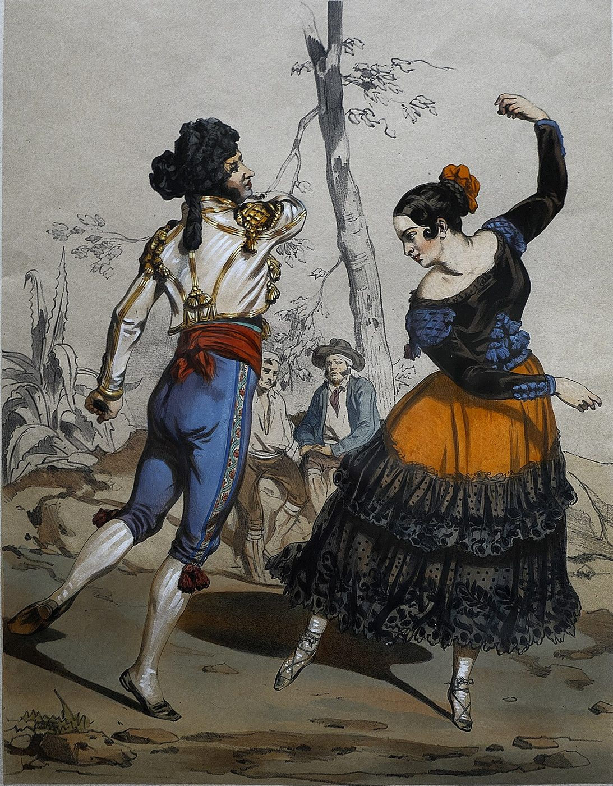
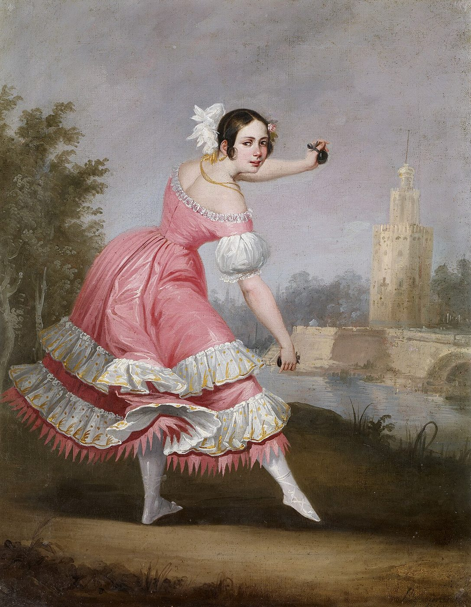
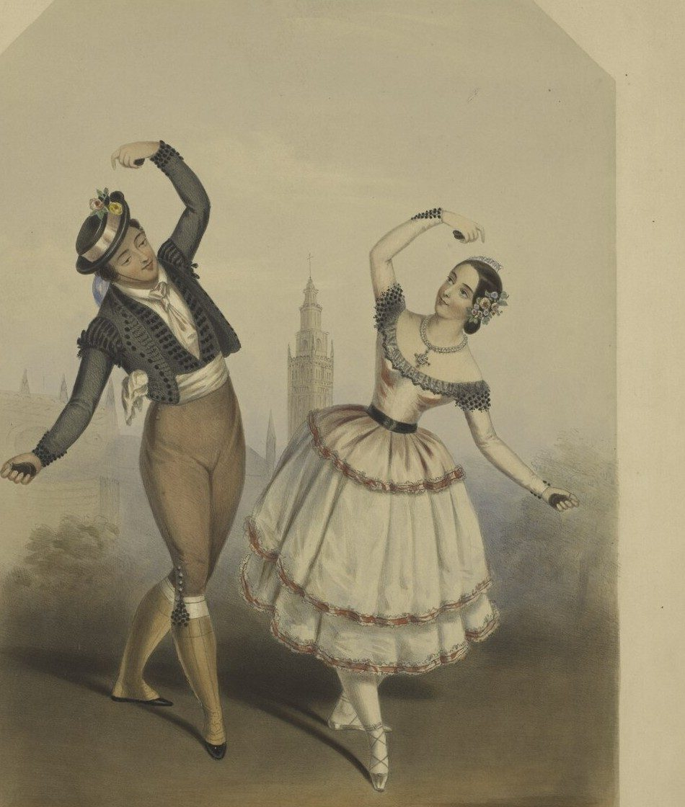
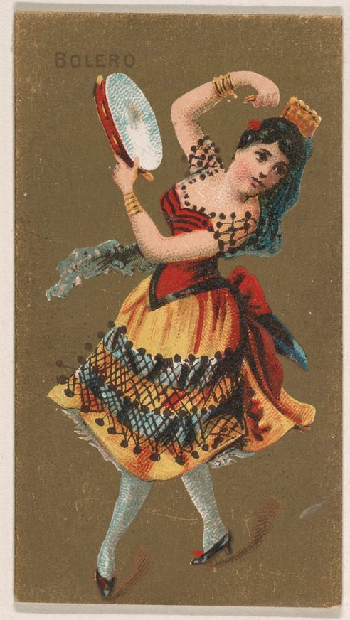
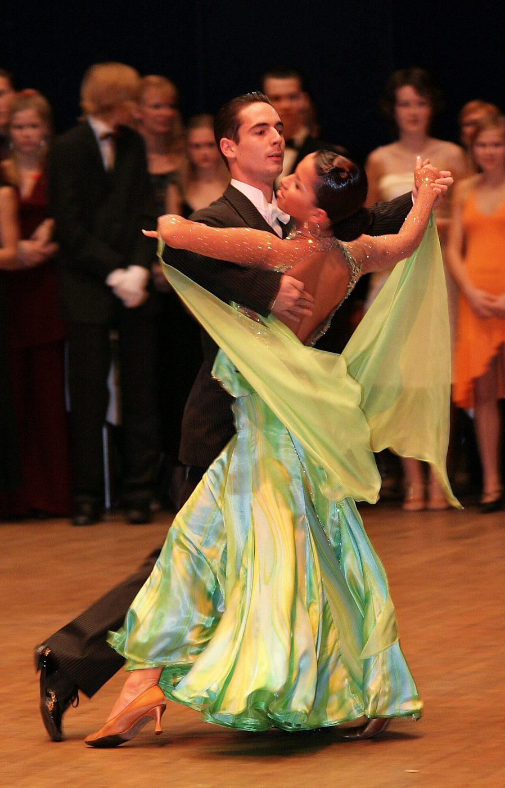

Dança de salão
Bolero
O ritmo mais romântico da América Latina: passos lentos, abraço fechado e muita emoção.
Letícia Paiva · Isabelly Cristina
01 · O ritmo
O nome do ritmo é bolero
1780
Espanha
Nasce o bolero espanhol, dançado com castanholas em compasso 3/4.
1883
Cuba
José “Pepe” Sánchez compõe Tristezas, considerado o primeiro bolero cubano. O ritmo fica mais lento.
1940
Brasil e México
Chega pelo rádio e pelo cinema, vira febre nos bailes e se torna dança de salão.
02 · Características
Como se dança o bolero
i.
Lento e romântico
Andamento lento, em compasso 4/4, feito para sentir.
ii.
Dança a dois
Casal em abraço fechado, muitas vezes de rosto colado.
iii.
Dois pra lá, dois pra cá
O passo básico: dois passos para cada lado, bem suaves.
iv.
Um conduz, o outro segue
O cavalheiro conduz giros e pausas; a dama responde.
v.
Letras de amor
As canções falam de paixão, saudade e amores perdidos.
vi.
Som acústico
Violão, piano, maracas, bongô e voz marcam o compasso.
Rosto colado, passos lentos e uma história de amor em cada música.
03 · A roupa tradicional
No bolero espanhol
Ela
Saia rodada com babados, blusa de mangas bufantes, flor no cabelo e castanholas nas mãos.
Ele
Jaqueta curta e bordada, faixa na cintura, calça justa até o joelho e meias.
Curiosidade: a jaqueta curta dos dançarinos ganhou o nome da dança. Até hoje esse modelo se chama bolero.

Pintura, séc. XIX

Litografia, séc. XIX

Cartão ilustrado, 1888
03 · A roupa tradicional
No bolero de salão, hoje

Apresentação de dança de salão
Ela
Vestido longo e fluido, com fenda ou saia leve que abre nos giros, e sapato de salto.
Ele
Calça social e camisa de botão, muitas vezes preta. Em bailes formais, terno ou colete.
Cores mais usadas
O tecido leve é importante: ele acompanha o movimento e deixa os giros mais bonitos.
04 · A dança
Veja o bolero dançado
Bolero, Nunca Mais
Jair Alcides e Andréia Garcia
Repare no abraço, nos giros e no vestido longo que abre a cada volta.
Bolero
Obrigada!
Agora é só chamar alguém pra dançar: dois pra lá, dois pra cá.
Letícia Paiva · Isabelly Cristina